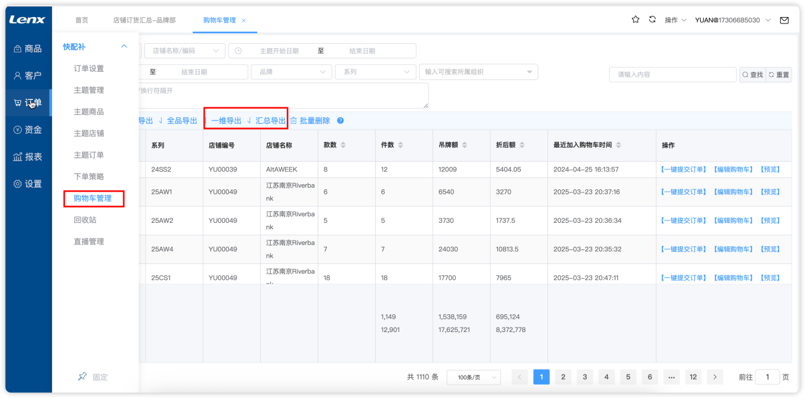
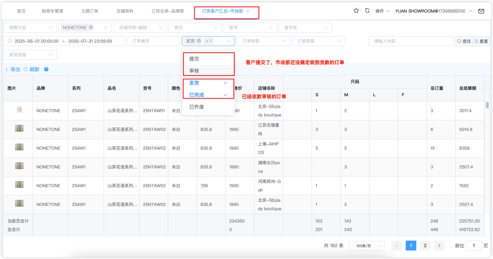
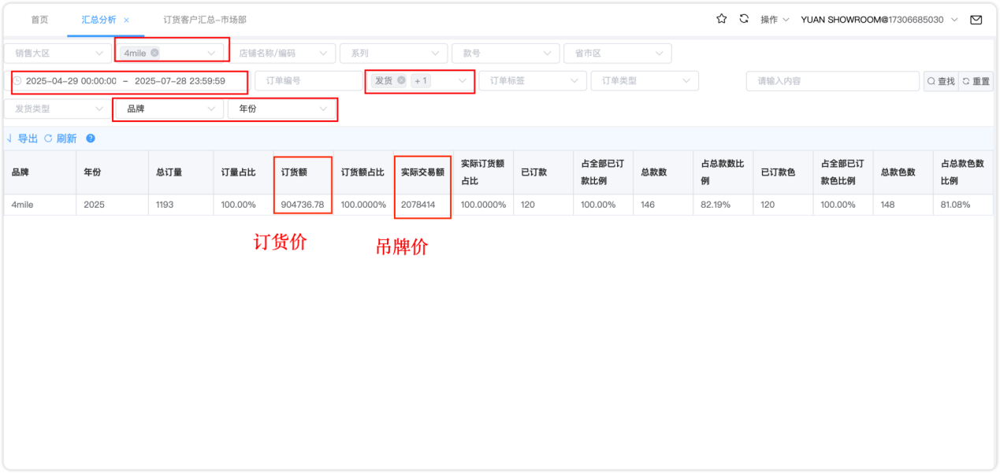
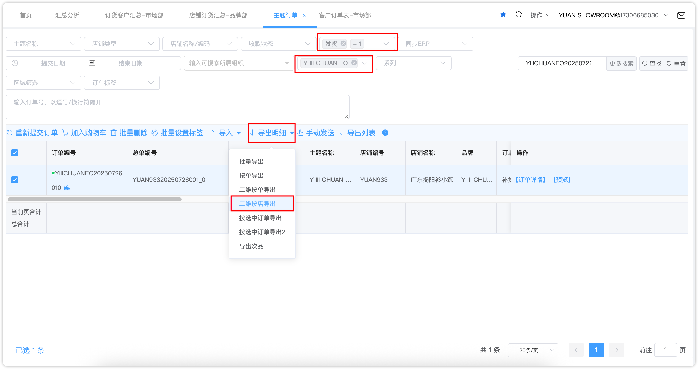
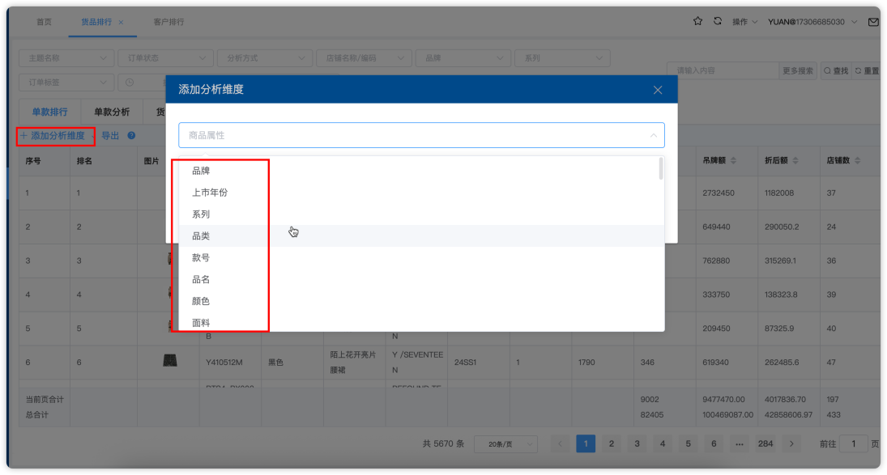
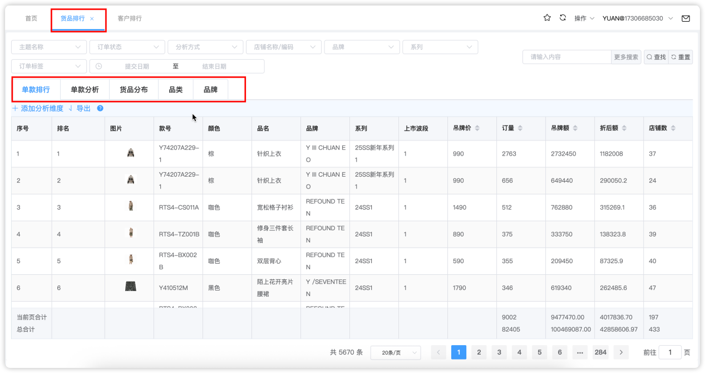

← 返回培训文档目录
品牌部 — 联欣系统订单数据查看指南
1. 各品牌意向订单查看与导出
责任人：品牌部
⚡ 操作路径：购物车管理 → 选择导出方式 → 导出数据
购物车管理模块支持三种导出方式，满足不同分析需求：
- 汇总导出：按品牌汇总订单数据
- 一维导出：单维度数据导出
- 二维导出：交叉维度数据导出（如品牌×店铺）

▲ 购物车管理操作界面
2. 各品牌确认订单查看与导出
责任人：品牌部
⚡ 操作路径：订货客户汇总（市场部）→ 筛选条件 → 查询导出
在订货客户汇总-市场部模块中：
- 筛选时间范围
- 选择品牌
- 订单状态选择：发货和已完成
- 点击查询后导出

▲ 订货客户汇总 - 确认订单查看
3. 各品牌订单汇总分析
责任人：品牌部
⚡ 操作路径：汇总分析 → 筛选条件 → 查询 → 多维度分析
通过汇总分析模块进行订单数据统计：
- 筛选品牌、时间、订单状态
- 选择一级分析维度（如品牌维度）
- 选择二级分析维度（如店铺维度）
- 点击查询查看统计结果

▲ 汇总分析操作界面
4. 各品牌客户订单与主题订单
责任人：品牌部
⚡ 操作路径：主题订单 → 筛选品牌/订单状态/时间 → 按店导出
查看各品牌下每个客户的具体订单数据：
- 筛选品牌
- 订单状态选择发货和已完成
- 设置时间范围
- 选择二维导出，按店铺维度导出明细

▲ 主题订单 - 按客户查看
5. 商品排行与店铺销售分析
责任人：品牌部
⚡ 操作路径：货品排行 → 添加分析维度 → 查看数据
通过货品排行模块分析商品的销售情况和各店铺单品销售数据：
- 可从货品资料中自行添加分析维度（如品牌、分类、时间段等）
- 支持多维度交叉分析，灵活查看不同维度的销售排行

▲ 货品排行 - 维度选择

▲ 货品排行 - 数据查看